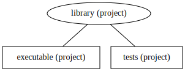

Calcolo numerico per la generazione di immagini fotorealistiche
Maurizio Tomasi maurizio.tomasi@unimi.it
Color
che codifichi un colore usando tre numeri floating-point (a 32
bit) per i livelli di rosso, verde e blu.Definiamo una classe Color usando
@dataclass (come struct in C++):
È possibile creare un colore con questa sintassi:
ColorHdrImageColor, oggi implementeremo un tipo
HdrImage, che useremo per rappresentare una immagine HDR
tramite una matrice di elementi Color.HdrImage dovrà implementare solo
queste funzionalità:
width) e il numero di righe (height);Il tipo più naturale per una matrice di colori è un array
bidimensionale di dimensione (ncols, nrows)…
…ma è più comodo ed efficiente usare un array
monodimensionale di dimensione
ncols × nrows.
Gli array bidimensionali non sono supportati in tutti i linguaggi (Kotlin ad esempio non li supporta), e se usati male possono essere molto inefficienti:
HdrImageIn Python possiamo implementare HdrImage così:
L’array di valori ha un numero di elementi pari a \mathtt{width} \times \mathtt{height}
A noi però interessa identificare un elemento della matrice
tramite una coppia (colonna, riga), ossia
(x, y).
Data la posizione (x, y) di un pixel (con x
colonna e y riga), l’indice nell’array
self.pixels si trova così:
get_pixel e set_pixelUsando la formula della slide precedente possiamo implementare i
metodi get_pixel e set_pixel:
def get_pixel(self, x: int, y: int) -> Color:
assert (x >= 0) and (x < self.width)
assert (y >= 0) and (y < self.height)
return self.pixels[y * self.width + x]
def set_pixel(self, x: int, y: int, new_color: Color):
assert (x >= 0) and (x < self.width)
assert (y >= 0) and (y < self.height)
self.pixels[y * self.width + x] = new_colorMa questa implementazione è la migliore?
No! Ma per capirlo dobbiamo parlare di come si verifica il codice
Gli errori sono dietro l’angolo!
Esempio (in un tema d’esame del corso di TNDS!):
Per verificare la correttezza di una funzione, occorrerebbe invocarla con dati non banali e controllarne il risultato.
Una volta scritto, il codice va verificato su casi il cui risultato è già noto
Il modo più semplice è testare il codice stampando a video i valori:
color1 = Color(1.0, 2.0, 3.0) # Avoid trivial cases like Color(3.0, 3.0, 3.0)
color2 = Color(5.0, 6.0, 7.0) # in your tests!
print(color1 + color2)
print (color1 * 2)che produce l’output
Color(r=6.0, g=8.0, b=10.0)
Color(r=2.0, g=4.0, b=6.0)Possiamo fare di meglio?
Il compito di verificare la correttezza dei calcoli è noioso e facile da sbagliare.
Dovremmo far svolgere compiti tediosi ai computer!
Tutti i linguaggi moderni offrono sistemi per l’esecuzione automatica di test. (Il C++ no, ed ecco perché queste cose non sono state spiegate nel corso di TNDS)
color1 = Color(1.0, 2.0, 3.0)
color2 = Color(5.0, 6.0, 7.0)
print(color1 + color2)
print(color1 * 2)assert:color1 = Color(1.0, 2.0, 3.0)
color2 = Color(5.0, 6.0, 7.0)
assert (color1 + color2) == Color(6.0, 8.0, 10.0)
assert (2 * color1) == Color(2.0, 4.0, 6.0)Il fatto che il nostro programma non produca output è atteso (non ha bug), ma non tranquillizzante: siamo sicuri che abbia davvero eseguito il test?
Una pratica molto diffusa è quella di iniziare scrivendo test sbagliati, e verificando che si generi effettivamente un errore:
color1 = Color(1.0, 2.0, 3.0)
color2 = Color(5.0, 6.0, 7.0)
assert (color1 + color2) == Color(6.0, 8.0, 11.0) # 10 -> 11
assert (2 * color1) == Color(3.0, 4.0, 6.0) # 2 -> 3Solo quando l’errore viene emesso si corregge il test.
Nei test che scriveremo dovremo usare operazioni logiche e di
confronto (in Python: ==, <,
>, <=, >=,
etc.)
Occorre prestare molta attenzione ai numeri floating point!
Evitate dei test che coinvolgano numeri con parti decimali (es.,
2.1, 5.09)
Numeri interi piccoli (es., 16.0) sono codificati
senza arrotondamenti…
…quindi nei test, se possibile, usate numeri floating point
interi (come abbiamo fatto per la classe Color in
Python)
Per i casi in cui non è possibile, definite una funzione
are_close:
L’implementazione di funzioni e tipi dovrebbe essere legata alla scrittura di test.
Implementare test per le due funzioni get_pixel e
set_pixel è ripetitivo:
def get_pixel(self, x: int, y: int) -> Color:
assert (x >= 0) and (x < self.width)
assert (y >= 0) and (y < self.height)
return self.pixels[y * self.width + x]
def set_pixel(self, x: int, y: int, new_color: Color):
assert (x >= 0) and (x < self.width)
assert (y >= 0) and (y < self.height)
self.pixels[y * self.width + x] = new_colorLa verifica delle coordinate va testata due volte: in
get_pixel e in set_pixel.
Dobbiamo verificare che coordinate sbagliate vengano rigettate
sia in set_pixel che in get_pixel:
Possiamo fare di meglio modularizzando il codice, ossia decomponendolo in parti più semplici (che è un vantaggio già di per sè).
def valid_coordinates(self, x: int, y: int) -> bool:
return ((x >= 0) and (x < self.width) and
(y >= 0) and (y < self.height))
def pixel_offset(self, x: int, y: int) -> int:
return y * self.width + x
def get_pixel(self, x: int, y: int) -> Color:
assert self.valid_coordinates(x, y)
return self.pixels[self.pixel_offset(x, y)]
def set_pixel(self, x: int, y: int, new_color: Color):
assert self.valid_coordinates(x, y)
self.pixels[self.pixel_offset(x, y)] = new_colorQuesti sono i test scritti per la nuova implementazione:
img = HdrImage(7, 4)
# Check that valid/invalid coordinates are properly flagged
assert img.valid_coordinates(0, 0)
assert img.valid_coordinates(6, 3)
assert not img.valid_coordinates(-1, 0)
assert not img.valid_coordinates(0, -1)
assert not img.valid_coordinates(7, 0)
assert not img.valid_coordinates(0, 4)
# Check that indices in the array are calculated correctly:
# this kind of test would have been harder to write
# in the old implementation
assert img.pixel_offset(3, 2) == 17 # See the plot a few slides before
assert img.pixel_offset(6, 3) == 7 * 4 - 1Questi sono detti unit test, perché vanno a verificare le singole «unità» di codice.
Nel nostro codice Python, per verificare la corrispondenza tra
due colori abbiamo usato ==, che funziona perché abbiamo
specificato numeri interi:
Però \pi compare spesso nei calcoli radiometrici!
Definite una funzione che confronti due Color come i
floating-point:
Da oggi lavorerete in gruppo: ciascuno di voi dovrà scegliere quale parte di codice implementare.
Inizieremo ad usare le caratteristiche più avanzate di Git per gestire i conflitti, ossia le situazioni in cui una parte di codice viene modificata contemporaneamente da più persone.
Vediamo un esempio pratico di conflitto per un semplice codice Python.
Scegliete un nome per il vostro progetto (qui useremo
myraytracer).
Strutturare il progetto nel modo seguente:
Color e
HdrImage, più le operazioni su di essi;Hello, world!;Color e
HdrImage.Registrare il progetto su GitHub e aggiungere i propri compagni.
Non abbiate paura di creare conflitti e fare merge commit: più vi esercitate con essi, più semplice vi sarà la vita in futuro.
In ogni gruppo, solo uno di voi dovrebbe creare lo scheletro del progetto, creare la pagina GitHub e salvarlo.
Gli altri membri diventeranno collaboratori del progetto (v. slide seguente).
Pensate a un modo per suddividere il lavoro tra membri del vostro
gruppo; ad esempio, per Color:
are_colors_close;Per lavorare in gruppo sul repository GitHub, ciascuno di voi
dovrà eseguire git push per inviare le proprie modifiche
(«commit») al server GitHub
A quel punto i compagni potranno scaricare le modifiche usando
git pull.
Un modo per dividersi il lavoro è che uno di voi implementi un
metodo (ad esempio valid_coordinates) e l’altro scriva
contemporaneamente il test:
valid_coordinates + test;pixel_offset + test;get_pixel/set_pixel + test.Colorr, g, b di tipo
floating-point a 32 bit: non servono 64 bit, e anzi ci
farebbero sprecare memoria e tempoGetR/SetR e simili: sono lunghe da scrivere,
facili da sbagliare, rendono il codice difficile da leggere e più lento
da compilareColor.is_close o funzione
are_close/are_colors_close per verificare se
due colori sono simili (utile nei test);<r:1.0, g:3.0, b:4.0>): sarà
comodo per fare debugNella maggior parte dei linguaggi c’è differenza tra value e reference types.
I value types sono valori a cui si può accedere direttamente, e sono sempre allocati sullo stack: sono molto veloci da usare, ma non possono occupare troppa memoria (alcuni kB al massimo).
I reference types sono dei puntatori al dato attuale, e possono essere sia sullo stack che nello heap; in quest’ultimo caso possono occupare tutta la memoria che vogliono, ma sono più lenti da leggere e scrivere.
Fanno eccezione i linguaggi basati su JVM (Java, Kotlin, Scala, etc.), per cui esistono solo reference types (ma la JVM può autonomamente convertire variabili in value types se capisce che è conveniente).
#include <iostream>
#include <vector>
int main() {
int a{}; // Allocated on the stack
int * b{new int}; // Allocated in the heap
int c[] = {1, 2, 3}; // Allocated on the stack
std::vector<int> v{1, 2, 3}; // "v" on the stack, but the three numbers in the heap
a = 15; // This is fast
*b = 16; // This is slower
std::cout << a << ", " << *b << "\n";
// Output:
// 15, 16
}In Python, qualsiasi variabile (anche le variabili intere come
x = 1) è allocata nello heap (uno dei motivi per cui è
molto più lento del C++)
Per programmi C/C++/Fortran/Julia, la dimensione è fissata dal
sistema operativo. Sotto sistemi Posix (Linux/Mac OS X), potete
conoscerne il valore in KB col comando ulimit -s:
$ ulimit -s
8192Il valore di 8 MB è caratteristico di Linux; per i Mac è 0,5 MB.
La piattaforma .NET (Visual Basic, C#) usa uno stack di 1 MB.
La piattaforma JVM (Java, Kotlin) usa uno stack di 1 MB, che è però usato solo per i tipi primitivi (interi, booleani, numeri floating-point).
La classe Color è molto piccola: richiede memoria
per 3 numeri floating-point, ed è quindi logico definirla come un
value type (questo non è vero per
HdrImage)
A seconda del linguaggio, l’uso di un value type richiede accorgimenti diversi:
struct oppure class (è
uguale), ma quando la userete nei codici/test evitate
new/delete;struct (value type), ma non
class (reference type);object o record, ma non
si usa class;object, ma non si usa
ref object;StaticArrays.Creazione di colori e funzione is_close:
Verificate anche che is_close fallisca (ossia
ritorni False) quando è necessario:
Questo tipo di test «negativi» è molto importante!
Somma/differenza/prodotto di colori:
Prodotto colore-scalare (implementate anche scalare-colore, se volete):
def test_image_creation():
img = HdrImage(7, 4)
assert img.width == 7
assert img.height == 4
def test_coordinates():
img = HdrImage(7, 4)
assert img.valid_coordinates(0, 0)
assert img.valid_coordinates(6, 3)
assert not img.valid_coordinates(-1, 0)
assert not img.valid_coordinates(0, -1)
assert not img.valid_coordinates(7, 0)
assert not img.valid_coordinates(0, 4)
def test_pixel_offset():
img = HdrImage(7, 4)
assert img.pixel_offset(0, 0) == 0
assert img.pixel_offset(3, 2) == 17
assert img.pixel_offset(6, 3) == 7 * 4 - 1
def test_get_set_pixel():
img = HdrImage(7, 4)
reference_color = Color(1.0, 2.0, 3.0)
img.set_pixel(3, 2, reference_color)
assert are_colors_close(reference_color, img.get_pixel(3, 2))
Il comando dotnet supporta la creazione di
soluzioni e progetti.
Per progetto si intende qualsiasi cosa che possa essere prodotta a partire da file contenenti codice C# (eseguibile, libreria…)
Una soluzione è un insieme di progetti. Nel grafico sopra, ogni elemento del grafico è un progetto, e il grafico nel suo complesso è una soluzione.
dotnet new slndotnet si dividono in più tipi:
dotnet new console)dotnet new classlib)dotnet new xunit)A dipende da
B, si usa dotnet add A reference Bdotnet sln addQuesti sono i comandi da terminale per produrre la soluzione che vogliamo:
# Create a new solution that will include:
# 1. The library
# 2. The executable (currently printing «Hello, world!»)
# 3. The tests
dotnet new sln -o "Myraytracer"
cd Myraytracer
# 1. Create the library, named "Trace", and add it to the solution
dotnet new classlib -o "Trace"
dotnet sln add Trace/Trace.csproj
# 2. Create the executable, named "Myraytracer", and add it to the solution
dotnet new console -o "Myraytracer"
dotnet sln add Myraytracer/Myraytracer.csproj
# 3. Create the tests, named "Trace.Tests", and add them to the solution
dotnet new xunit -o "Trace.Tests"
dotnet sln add Trace.Tests/Trace.Tests.csproj
# Both the executable and the tests depend on the «Trace» library
dotnet add Myraytracer/Myraytracer.csproj reference Trace/Trace.csproj
dotnet add Trace.Tests/Trace.Tests.csproj reference Trace/Trace.csproj
# Create a .gitignore file
dotnet new gitignoreFate tutto da linea di comando e poi aprite il progetto in Rider: è più istruttivo!
La soluzione così com’è creata ha nomi generici per i file, ed è meglio cambiarli in qualcosa di più facile da riconoscere;
Rinominate i file in modo da avere una struttura con questa forma:
Myraytracer
├── Myraytracer.sln
├── Myraytracer
│ ├── Myraytracer.cs <-- This was Program.cs
│ └── Myraytracer.csproj
├── Trace
│ ├── Color.cs <-- This was Class1.cs
│ ├── HdrImage.cs <-- New file
│ └── Trace.csproj
└── Trace.Tests
├── ColorTests.cs <-- This was UnitTest1.cs
├── HdrImageTests.cs <-- New file
└── Trace.Tests.csproj// This should be put in Trace.Tests/ColorTests.cs
using System;
using Xunit;
using Trace;
namespace Trace.Tests
{
public class ColorTests
{
[Fact]
public void TestAdd()
{
Color a = new Color(1.0f, 2.0f, 3.0f);
Color b = new Color(5.0f, 6.0f, 7.0f);
// C# convention: *first* the expected value, *then* the test value
Assert.True(Color.are_close(new Color(6.0f, 8.0f, 10.0f), a + b));
// ...
}
}
}Potete eseguire i test col comando dotnet test, oppure
in Rider (comodissimo, fate riferimento alle slide relative a
Kotlin)
Definite Color come una struct e
HdrImage come una class; per
Color prevedete dei default:
Definite il campo pixels del tipo
HdrImage come un array
dinamico
Definite un costruttore per HdrImage che accetti
width ed height, ed inizializzi
pixels allocando
la lunghezza appropriata e poi impostando il colore di tutti i pixel
al nero
Il linguaggio D offre un ottimo supporto ai test tramite la
keyword unittest (da sogno!)
Non è quindi necessario definire i test in file separati, com’è invece il caso ad esempio del C# e di Nim
Per eseguire i test, basta avviare il comando
$ dub testLa documentazione corrispondente è qui: Unit tests
Implementare i tipi Color e HdrImage
dovrebbe essere elementare
Assicuratevi di usare object e non
ref object per Color, mentre per HdrImage è
indifferente
Ricordatevi che in Nim bisogna esportare sia i tipi che i loro
membri, usando *:
HdrImageIn Nim non servono costruttori come in C++
La prassi è quella di definire una funzione
newMyType che crei il tipo MyType
Aggiungete quindi una procedura newHdrImage che
accetti due parametri width ed height;
inizializzate il campo pixels usando newSeq,
poi impostate tutti i colori a zero (nero)
In Nim è possibile usare il comando assert per
eseguire dei test
La prassi è quella di creare dei file Nim all’interno della
directory tests; se questi file iniziano con
t, vengono eseguiti
automaticamente dal comando
$ nimble testPer scrivere i test dei tipi Color e
HdrImage, create quindi un file
tests/test_basictypes.nim fatto così:
Per oggi non è necessario che strutturiate il codice in moduli complessi.
Create un file basictypes.rs in cui definirete sia
il tipo Color che il tipo HdrImage, insieme a
tutti i test associati ad essi
Potete per il momento lasciare il file main.rs
intatto (con il messaggio Hello, world!)
Per formattare automaticamente il codice, usate il comando
cargo fmt
Per Color, derivate i trait
Copy, Clone e Debug per
semplificarvi la vita:
Per HdrImage, definite il membro pixels
di tipo Vec<Color>
Definite anche una funzione
create_hdr_image(width: i32, height: i32) -> HdrImage,
che inizializzi pixels correttamente
Rust supporta test nativamente usando le annotazioni
#[cfg(test)] e #[test]
I test possono essere eseguiti automaticamente con il comando
$ cargo testConsultate la guida di Rust; una trattazione più approfondita si trova nel capitolo 11 di The Rust Programming Language (Klabnik & Nichols)
IntelliJ IDEA si basa su Gradle, che è l’equivalente di CMake in C++.
Gradle può essere programmato in Groovy (un linguaggio basato su Java) o in Kotlin.
Siccome Java e Kotlin permettono un’ottima modularità, per questo corso non è necessario differenziare tra libreria ed eseguibile.
Create quindi un nuovo progetto esattamente come avete fatto la volta scorsa.
In IntelliJ IDEA le classi si creano dalla finestra del progetto (a sinistra):
ColorIn Kotlin, usate le data classes per definire la classe
Color: sono molto veloci da usare!
Definite is_close e gli operatori plus
(somma di due colori) e times (prodotto tra colore e
scalare).
HdrImageKotlin permette la definizione di classi in forma estremamente
compatta. Ecco un esempio di implementazione di
HdrImage:
Abituatevi alla differenza tra val e
var!
IntelliJ IDEA genera e gestisce il codice di test.
Usa la libreria JUnit; se vi chiede che versione usare, potete optare per la 4 oppure la 5.
Controllate la versione usata nel vostro progetto aprendo il menu «File | Project structure».
Qui la versione usata è la 4.
Fate click col tasto destro sul nome di una classe e scegliete Generate.
Nella finestra che compare, scegliete la versione giusta per
JUnit e poi fate un segno di spunta accanto ai metodi per cui volete
scrivere test. (Nel nostro caso saranno is_close,
plus e times).
Una volta implementati i test (usando assertTrue e
assertFalse), eseguiteli usando le icone a sinistra
dell’editor.